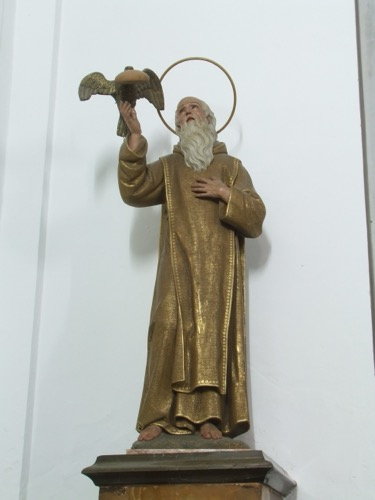
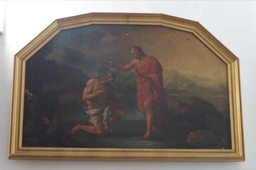
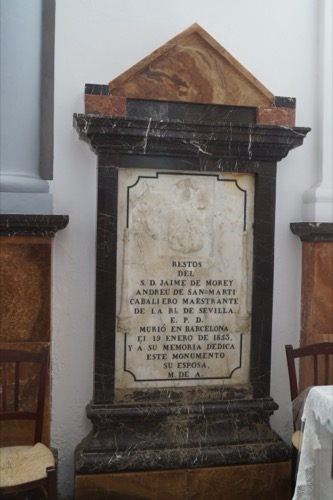
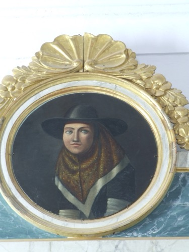

San Pablo de Tebas
Toca para ver la ficha

Bautismo de Jesús
Toca para ver la ficha

Sepulcro de Jaume Morei
Toca para ver la ficha

Inmaculada Concepción
Toca para ver la ficha

Santa Catalina Tomás
Toca para ver la ficha